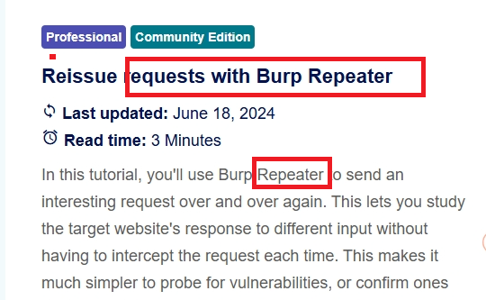
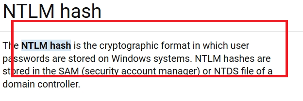
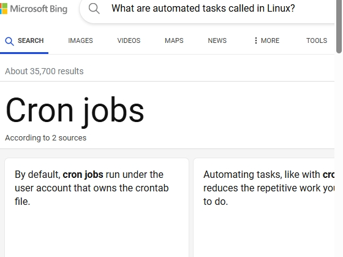
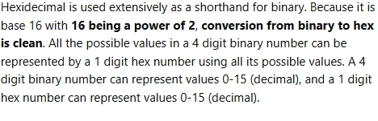
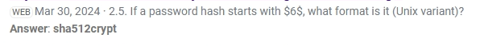
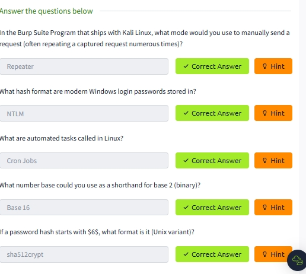

the ability to research effectively is the most important
quality for a hacker to have. By its very nature, hacking
requires a vast knowledge base — because how are you supposed
to break into something if you don't know how it works?
The thing is: no one knows everything.
example research question
this one is practical and find image is instruction is
That's how we can extract an image from a file. Our research
has paid off and we can now go and complete the task.
the question are
1. In the Burp Suite Program that ships with Kali Linux,
what mode would you use to manually send a request
(often repeating a captured request numerous times)?

2. What hash format are modern Windows login passwords stored in?

3. What are automated tasks called in Linux?

4. What number base could you use as a shorthand for base 2 (binary)?

5. If a password hash starts with $6$, what format is it (Unix variant)?
 
vulnerability searching
this room talk about vulnerability or port that is say
Often in hacking you'll come across software that might be open
to exploitation. For example, Content Management Systems
(such as Wordpress, FuelCMS, Ghost, etc) are frequently used
to make setting up a website easier, and many of these are
vulnerable to various attacks.